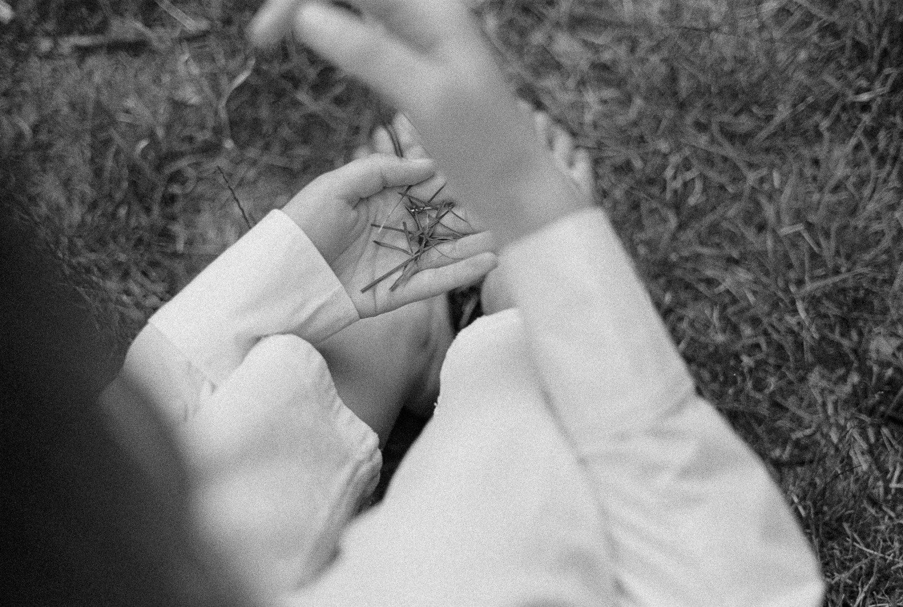

PracticingNine pictures
The whole practice is three movements: notice a page, make with it, and rest with what stays. The pictures show every fold. Look at them once, and then put them away.
Arriving
Feel the weight of yourself in your seat. Notice what is touching what — hands on the table, feet on the floor. Take one breath that is slightly slower than usual. Ask yourself, without needing a precise answer: what am I carrying right now?
This is enough. You have already begun.
Three movements
Notice. Choose a page and print only that one. Let your eyes travel it. Notice where the lines crowd and where they open, and where you want to go first.
Make. Attend to the page in whatever way you need, and let it dry. Then tear away the strip, fold the square into its box, fill it with soil, and sow.
Rest. Keep the strip somewhere you will find it. When you have a few, weave them, and sit with what they have become before you decide what you think of it.
The nine pictures
1Attend to the whole page. Let it dry.
2Fold the top corner across until the edges meet.
3Wet the crease and tear. Keep the strip.
4Open the square. Crease the other diagonal, then bring all four corners to the centre.
5Fold each edge to the centre, then open it again. All four.
6Open two opposite flaps. Stand the two long sides up.
7Lift each end. The corners tuck in; fold the point down inside.
8Fill with soil. Sow seed native to where you live.
9When you are ready, weave your strips, over and under.
Raising the walls, in pictures six and seven, is the part that takes a try or two. Fold one box from a blank page first, so the page you have attended to is not the one you learn on.

Sowing
Seed that belongs. Sow seed native to where you live, from a source near you. The Seed Atlas gives a season and a place to ask for a first set of regions; your local native plant society will know more.
Your own ground. Plant the pot in your own garden, a container, or a place you have been invited to plant. Parks and wild places are not ours to add to.
What goes into the ground. A page marked in pencil, watercolour, ink or plant dye can be planted whole. If you used anything that will not break down, lift the seedling out when you plant it and keep the paper.
If nothing comes up. Some seed waits a season or longer before it moves. The practice was the attending and the giving back; the seed keeps its own time.
The weaving
Lay some strips side by side and weave the others through them, over and under. On Letter paper, six strips, three each way, make a square about 19 cm (7½ inches) across. On A4, where the strip is wider, four strips, two each way, make a square about 17 cm. Any number from two up will weave; an odd number makes a rectangle, which is fine.
For a finer weave, fold each strip in half along its length and tear it in two. Then the halves always divide evenly:
| Pages | Weave | Letter paper | A4 paper |
|---|---|---|---|
| 2 | 2 by 2 | 6.4 cm · 2½ in | 8.7 cm |
| 3 | 3 by 3 | 9.5 cm · 3¾ in | 13.1 cm |
| 4 | 4 by 4 | 12.7 cm · 5 in | 17.4 cm |
| 5 | 5 by 5 | 15.9 cm · 6¼ in | — |
| 6 | 6 by 6 | 19.1 cm · 7½ in | — |
Sizes are the side of the finished square. On A4 the strip is wider, so four pages already fill its length.
Seedling Pages is not a diagnostic tool, a therapeutic assessment, or a replacement for professional mental health support. It is a creative care practice — a way of tending to yourself through attention, making, and the quiet company of the natural world. If you are working with difficult emotions and would like more support, please reach out to a qualified therapist or counsellor.